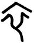

萃卦 澤地萃
萃亨，王假有廟，利見大人，亨，利貞。用大牲吉。利有攸往。初六，有孚不終，乃亂乃萃，若號。一握為笑，勿恤，往无咎。六二，引吉，无咎，孚乃利用禴。六三，萃如嗟如，无攸利。往无咎，小吝。九四，大吉，无咎。九五，萃有位，无咎，匪孚。元永貞，悔亡。上六，齎咨涕洟，无咎。
【卦名】
今本：萃 歸藏：萃 帛書：卒 秦簡：卒 清華簡： 上博簡： 海昏簡：萃
《說文》：「萃，艸皃。」萃原本意指草木叢生繁茂的樣子，引申為聚會、群聚。這也是傳統十翼所持的字義，如《彖傳》：「萃，聚也。」《雜卦傳》：「萃聚而升不來也。」《序卦傳》：「物相遇而後聚，故受之以萃，萃者聚也。」
歸藏卦名也作萃。但帛書、秦簡則作卒，上博簡作，清華簡作，這些從卒的字或可視為萃字之假藉。然而，萃字發展較晚，大概在戰國晚期，意指戎車部隊，與軍隊編制有關。因此最早的卦名較可能是卒，卒亦有軍隊編制之義。而萃以及其他從卒的卦名都是由卒字增繁而來。
《說文》：「卒，隸人給事者衣為卒。卒，衣有題識者。」依《說文》，卒為古代「隸人給事者」所穿的衣服。《爾雅》：「卒，盡也。」取終竟義。另外《爾雅》還取「終也」、「死也」等義。
卒的甲骨文 和衣字很像，但多了ㄨ或爻等數量不等的交錯線條，古文字學家或以為交錯線條就是《說文》所謂的「題識」，但也有古文字學家認為多了交錯線條並無特殊意義，並解讀為衣的異體字。也有人認為這是死者的裹屍布，交叉線條可能是捆綁屍體的繩子（vividict.com）。
卒又用作士兵、士卒。《周禮》中又作為軍隊編制，一百人為卒，五卒為旅：「乃會萬民之卒伍而用之。五人為伍，五伍為兩，四兩為卒，五卒為旅，五旅為師，五師為軍。」《易經》中與此編制有關的還有師卦和旅卦。
卦義
卦取聚會，聚集之義。
澤在地上，水澤滋潤大地之象，大地受到滋潤所以萬物群聚而生。《彖》曰：「順以說，剛中而應，故聚也。」內坤順，外兌悅，九五剛中與六二相應，所以為聚。
孔穎達：「萃，卦名也，又萃聚也，聚集之義也。能招民聚物，使物歸而聚己，故名為萃也。」
八卦中坎與澤都屬於險卦，也都取象為水，差別在於坎為流動而可與火交融的水，澤為不流動與火不相容的大水或水體。兩卦的相同之處，其水險可由震動與巽風散之，且遇到坤地也都有向下滋潤的作用，讓險象變為吉象。因此水地為比，澤地為萃。
上兌為見，下坤為眾，為眾見之象，因此曰聚。卦辭曰「王假有廟」，王至太廟以會聚眾人。
卦序上萃卦是繼姤卦而來，《序卦》曰：「物相遇而後聚，故受之以萃。萃者，聚也。」姤卦為陰之遇陽，萃卦則是遇久而後群聚。
得萃卦人事可以亨通，利於集合大眾共同謀事，或求見德高望重的大人。凡事可以隆重而盛大舉行，不宜節儉吝嗇。利於遠行，而不利於退守。
萃卦以九四、九五兩個陽爻為萃聚之主爻，特別是九五，即為卦辭「王假有廟」的王，也是利見之大人，因此九五曰「萃有位」。九四為近君而代九五有民的萃聚之主，難免九五之疑忌，因此大吉乃能無咎。相較於下卦三陰順從而能萃聚於陽，上六處於卦極而凌駕二陽之上，是唯一無法萃聚者，故齎咨涕洟。初六雖遠於二陽，但與九四相應，故一握為笑可得無咎。六二雖與二陽無有交接，但也是唯一與九五相應者，得引吉而無咎，有孚信則可用簡約之禴祭。六三上承九四，有萃如之象，但有內外之隔，又居多凶之位而不正，故萃如嗟如。
萃，亨，王假有廟。利見大人，亨，利貞。用大牲吉，利有攸往。
- 《彖》曰：萃，聚也。順以說，剛中而應，故聚也。王假有廟，致孝享也；利見大人，亨，聚以正也；用大牲，吉，利有攸往，順天命也。觀其所聚，而天地萬物之情可見矣。
- 《象》曰：澤上於地，萃，君子以除戎器，戒不虞。
- 《序卦》：物相遇而後聚，故受之以萃，萃者聚也。聚而上者謂之升。
- 《雜卦》：萃聚而升不來也。
- 《易占》：萃者取也。
聚會，大王來到宗廟。利於見大人，嘉會而合禮，利於貞定。使用大的牲禮為吉，利於遠行。
此句第一個「亨」字為衍文。朱熹：「亨字衍文。」《釋文》：「馬鄭陸虞等並無此字。」帛書本和上海楚竹書都無此亨字，證實朱熹說法。
《周易》經文四次出現「王假」（王至），似乎都與歷代周王的建都或遷徙有關：家人九五王假有家，萃卦王假有廟，豐卦王假之，渙卦王假有廟。
豐卦為文王建豐邑，渙卦從「渙王居」來判斷像是武王建鎬京。萃卦與升卦同觀，講的似乎是同一故事。升卦之南征，升虛邑，王用亨于岐山，至升階，指向古公亶父遷至岐下的歷程，那麼萃之王假於廟似乎是遷徙之前的聚會。家人卦則是古公亶父遷至岐下之後建立家室，詳論可參考家人卦。
鄭玄：萃，聚也。坤為順。兌為悅。臣下以順道承事其君，說德居上待之。上下相應，有事而和通，故曰萃亨也。假，至也。互有艮巽，巽為木，艮為闕。木在闕上，宮室之象也。四本震爻，震為長子。五本坎爻，坎為隱伏。居尊而隱伏，鬼神之象。長子入闕升堂，祭祖禰之禮也，故曰「王假有廟」。二本離爻也。離為目，居正應五，故利見大人矣。大牲，牛也。言大人有嘉會時可幹事，必殺牛而盟，既盟則可以往，故曰利往。
【字義】
王假有廟：一、王至于廟，君王來到宗廟。「假」通「徦」，至也。虞翻：「假，至也。」王弼：「假，至也。王以聚至有廟也。」古文「有」通「于」，帛書作「王叚于廟」。廟，宗廟，集合鬼神與群眾的地方。古時有大事必集合眾人於宗廟。有權勢者，如君王，才能夠在宗廟匯聚群眾。《彖》曰：「王假有廟，致孝享也。」君王至宗廟，用以盡孝道，祭祀鬼神。二、假通格，格，至也，感通也。來知德：「言當此萃時，可以格鬼神。」三、假借為嘏，大也，義近於昭。陸績：「假，大也。言五親奉上矣。」俞琰：「假當依馬融作古雅反，訓大，與豐彖辭王假之同。」四、假通昭。龔煥：「假字疑當作昭，假烈祖之假，謂感格也。」《日講易經解義》：「假，昭假也。」
大牲：大的牲禮，以表示隆重，慎重其事。具體而言，如既濟九五東鄰之殺牛，即是用大牲。中孚的「豚魚吉」，就不是大牲。損卦的「二簋可用享」，及既濟九五的西鄰之禴祭，則是薄祭。
利有攸往：利于遠行，或利有所往。攸，遠，或所。利於有所往，利於有遠往，就是利於出行，或者利於遠行的意思。也可解釋為利益有遠往，意指有長遠的利益。
除戎器，戒不虞：修治兵器，以戒備可能的意外。除，修治，言君子應當整治兵器。《說文》：「除，殿陛也。」段玉裁：「殿陛謂之除，因之凡去舊更新皆曰除，取拾級更易之義也。」除原本意指殿堂的台階，由逐級而上引而申之，為去舊更新的意思，因此解釋為修治。虞翻：「除，修；戎，兵也。」孔穎達：「除者治也。」《釋文》：「除，本亦作儲，又作治。」另一解釋「除」為除去，言當除去兵戎，以修文德。兩種解釋以前者為佳。
初六，有孚不終，乃亂乃萃。若號，一握為笑，勿恤，往无咎。
《象》曰：乃亂乃萃，其志亂也。
誠信不能長久，因為動亂而集會眾人。如果能夠出面號召，與人握手言和，一笑置之，不需憂心，如此前往能免於罪咎。
前半段講因為不能信守承諾而引來動亂，以此而集會，可能動輒得咎。後半講，如果能把事情說開，放下身段與人溝通，握手一笑泯恩仇，那麼就可得无咎。
孚，誠信。不終，不能到最後。有孚不終，誠信不能持久，不能信守承諾到最後。
【字義】
一握：註解相當分岐，莫衷一是。後儒多採程頤說法，以「一握」為群眾。一、與「為笑」連讀，一握為笑，握手言和。朱震：「一握其手，笑以喻意微動之也。......為笑者，獻笑也。」俞琰：「握手為笑，勿用憂恤也。」二、一握為渺小，與「自號」連讀，自號一握為自比渺小，王弼：「一握者，小之貌也。」三、一團，引申為眾人。與「為笑」連讀，言眾人以為笑。程頤：「一握，俗語一團也，謂眾以為笑也。」朱熹：「若呼號正應，則眾以為笑。」四、一屋，《釋文》：「鄭康成曰：握讀為夫三為屋之屋。蜀才同。」「夫三為屋」為井田制的編制，夫三為屋，屋三為井。帛書作「一屋于芺」。此義似與程頤眾人之解相近。五、狀聲辭。蘇軾：「一握為笑者，號且笑也，一握者，其聲也。」聞一多：「一握與呝喔、嗌喔、咿喔同。號謂號咷，哭也。若號一握為笑，......與同人先號咷後笑同為先凶後吉之象。」李鏡池亦持此說。五、一渥，《釋文》：「傅氏作渥。」鼎卦九四：「鼎折足，覆公餗，其形渥，凶。」
若號一握為笑勿恤：有不同的句讀，歷代解釋也相當歧異。一、依王弼，讀作「若號一握，為笑勿恤」，若能把自己說得很渺小，對人笑臉以對而不懷憂恤，那麼就可得无咎。號為自號，自己宣稱。一握，形容渺小的樣子。孔穎達：「若自號比為一握之小，執其謙退之容，不與物爭，則不憂於三，往必得合而无咎。」二、讀作「若號，一握為笑，勿恤」。《釋文》：「若號絕句。」如果上位者能夠出面號召，與其握手而將事情一笑置之，不用憂慮。或者解釋為：如果呼喊，眾人會取笑。號，呼喊，呼叫君子來相救。一握，握手，或一團，指眾人。三、「若號一握為笑，勿恤」，依聞一多，一握為狀聲辭，此為先號咷而後笑之義。
勿恤：不要憂慮。恤，憂慮。
六二，引吉，无咎。孚乃利用禴。
《象》曰：引吉无咎，中未變也。
牽引同伴而往，吉，無咎。虔誠者才能夠以簡單的祭祀來祈福。
此以禴祭說明誠心之重要，有誠心者，則祭祀不在隆重，簡單如禴祭亦可感動神明，得到保祐。心志若夠堅定，誠心足夠，則自能吉而無咎。反之，若無誠心，那麼怎樣隆重的祭祀都沒有用。所以《象傳》說：「引吉无咎，中未變也。」中即內心，指人之志向。又隱喻六二為中爻，具中庸之美德，此美德不變。六二因柔順中正，又與萃卦主爻九五相應，因此稱吉。
卦辭言「王假有廟」、「用大牲吉」，王至太廟，聚眾致祭當隆盛，有大的排場與祭祀規格，因此用大牲吉。六二柔順中正，上應九五，若有孚則亦可以簡約之禴祭行之。升卦九二亦曰「孚乃利用禴」。既濟九五「東鄰殺牛，不如西鄰之禴祭」，東鄰殺牛即是用大牲。除了「用禴」，《易經》另有其他祭祀簡約的，例如損卦「二簋可用享」。《竹書紀年》帝辛六年：「周文王初禴于畢。（畢西于豐三十里。）」帝辛即商紂。
【字義】
引：牽引。六二前後皆陰，三陰相連為引，牽連之象。與下三陰能夠順承九四，又與九五相應。《說文》：「引，開弓也。」引申之為引薦、牽引。金文中則解釋為長久，引吉即長吉。
孚：信，誠實，誠心，虔誠。
禴：音月，於周為夏季的祭祀，因夏祭最簡，引申指的是簡便、從簡、簡約的祭祀。另有一說認為禴是殷商的春天之祭，也是祭祀中最簡約者。禴通礿，礿之言約也。王弼：「禴，殷春祭名也，四時祭之省者也。」《釋文》：「禴，殷春祭名，馬王肅同。鄭云：夏祭名。蜀才作躍，劉作爚。」《日講易經解義》：「禴，夏祭名。夏時物未備，惟以聲樂交於神明，祭之薄者也。」由於夏季的作物還未完備，因此只簡單以音樂敬獻給神明，是祭祀中最為簡薄的。
六三，萃如嗟如，无攸利，往无咎，小吝。
《象》曰：往无咎，上巽也。
相聚而感歎，無所利。前往，沒有罪咎，小有悔吝。
萃如嗟如，相聚而感嘆。因為所聚非人。萃卦應該是利見大人，但六三見不著大人，只能見到小人。
初六與六二分別與外卦之九四與九五相應，六三雖承九四，但有內外之隔，與上六不應，因此所聚者為下卦兩爻之小人，下體成坤為眾，為小人朋比相聚。三為多凶多咎之位，故「萃如嗟如」。《象》曰「往无咎，上巽也」，此為《象傳》採互體的例證，「上巽」即六三與九四九五三爻所成的巽卦，此巽體在六三之上，因此說「上巽」，巽為漸入，即六三可逐漸進入，故曰無咎。
九四，大吉无咎。
《象》曰：大吉无咎，位不當也。
大吉才能夠免於罪咎。
上近九五之君，近君多憂之位，而下據群眾，不免為君所疑，因此要大吉，求得完滿之後才得以免咎。
九四下接下卦之坤，坤為群眾，因此為代九五而據有群眾者。
無咎是偏凶的占斷，意思要問筮者努力補過以免除罪咎，免於上天的懲罰。既然說「大吉」，為何還「無咎」？如此吉凶相混，不就自相矛盾了？《易經》的吉凶都是有條件的，此爻的吉凶占斷為「無咎」，「大吉」則是求得無咎的條件，言問筮者當努力讓事情得到最完滿的結果，大吉之後才可免於罪咎。若不能做到大吉，則有罪咎。
王弼如此說：「履非其位而下據三陰，得其所據，失其所處。處聚之時，不正而據，故必大吉，立夫大功，然後无咎也。」九四陽處陰位而不當位，下卦上陰承順九四而為九四所據有。在萃聚之時，據有群陰而不正，所以一定要做到大吉，立下大功，然後才可以無咎。
《象傳》說：「大吉无咎，位不當也。」因為九四居多懼之地又失位，行止不妥當，因而原本當有罪咎。
九五，萃有位，无咎。匪孚，元永貞，悔亡。
《象》曰：萃有位，志未光也。
聚會中有地位，沒有罪咎。如果不受信任，當長保貞定守正，以免於後悔。
雖然位尊，但下有九四分化權力。因此難免會有信任的問題，並讓志向無法光大。當此之際只有長期的堅定守正。
《象》曰：「萃有位，志未光也。」因擁有九五之尊的位置，所以本來就不會有罪咎。但是所信非人，自己誠信亦因此連帶遭質疑，只有以長遠而堅定的意志才能重建誠信。
九五為萃卦的主爻，也是其餘各爻會聚的中心。又九五為君位，所以稱「有位」。
匪孚，非孚，沒有誠信、信任。指九四近臣，不能相信。亦可指九五沒有誠信。
上六，齎咨涕洟，无咎。
《象》曰：齎咨涕洟，未安上也。
傷心悲嘆，痛哭流涕，沒有罪咎。
處萃卦的最上面，近處與九五相逆，沒人能伸援手；與六三無應，遠處無人呼應。往下哀求與人相聚而不可得，只能獨自哀聲嘆息，涕泗縱橫，但若是能反省而改過，應能免於罪咎。
【字義】
齎咨：悲傷而嘆息。齎，音機。涕洟，眼淚與鼻涕，形容痛哭流涕的樣子。馬融：「齎咨，悲聲怨聲。」鄭玄、王弼：「齎咨，嗟歎之辭也。」虞翻：「自目曰涕，自鼻稱洟。」
【彖傳】
《彖》曰：萃，聚也。順以說，剛中而應，故聚也。王假有廟，致孝享也；利見大人，亨，聚以正也；用大牲，吉，利有攸往，順天命也。觀其所聚，而天地萬物之情可見矣。
萃，聚也：萃為聚，上兌為見，下坤為眾，眾見聚會之象。
順以說：以二體卦德解釋卦義，下卦坤為順，上兌為說。
剛中而應，故聚也：主爻九五剛中，應六二，所以為聚。
王假有廟，致孝享也：王至于廟，以致上孝享。假，至也。有，于也。享，祭祀。孝享，表達孝道之祭祀。互體艮，艮為鬼門為宗廟，眾見於宗廟之下，因此曰「王假有廟」。
聚以正也：解釋利貞。《彖傳》以貞為正。